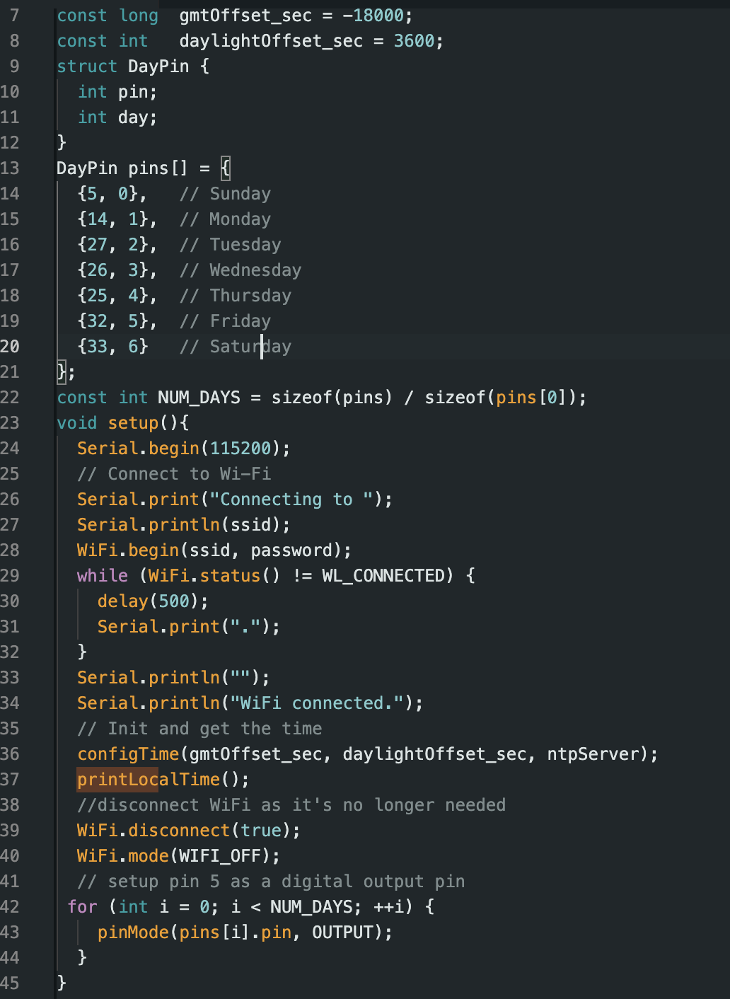
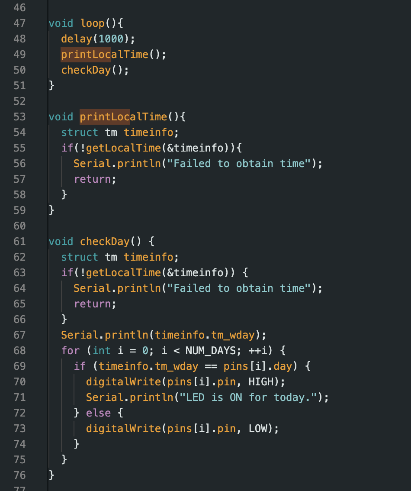
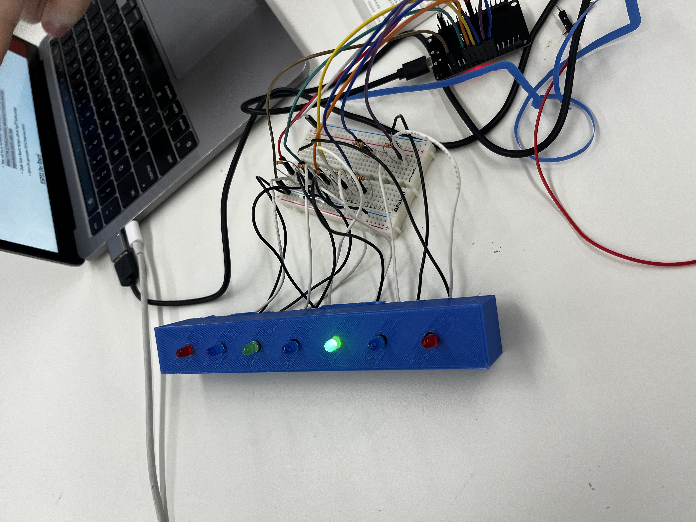

/week 9: radio, wifi, bluetooth (IoT)
# gramophone
# ---------------------------------
This week, Jim Hansen and I teamed up to take on the world. For Jim's MVP, he was working on a radio streaming device, and, for my MVP, I was working on cracking a way to track the motor crank rotations. We decided to combine our two MVPs to make a gramophone.
With my rotation tracking abilities coupled with Jim's radio streaming abilities, all we had to do was merge our two MVPs into one Frankenstein-esque lovechild. While Jim got to work wiring everything onto a single ESP32, I got to work on the software side of things.
My initial plan was to turn the rotation script into an RPM script. However, the numbers yielded from this
to ensure our display would show the correct day, we used an esp32 board, which is a microcontroller with wi-fi capability. this board was programmed to retrieve the current day from an ntp server. an ntp server is a dedicated computer that uses the network time protocol to provide devices with the precise time and date, ensuring our display would always be accurate.
our code is designed to connect to a wi-fi network, synchronize time with an ntp server, and control a set of leds based on the day of the week. it defines a structure to associate gpio pins with days of the week and initializes a wi-fi connection using specified credentials. once connected, it retrieves the current time, disconnects from wi-fi to save power, and sets each pin to an output mode. in its main loop, the code continuously checks the current day and activates the corresponding led for that day, turning on one led each day of the week, while turning off all others. it has error handling for failure to obtain the time, and serial print statements for debugging and monitoring its status.
this is the code we used:


while the printing was underway, we focused on coding. we started by experimenting on a breadboard, connecting several leds to the esp32 using resistors and tested our code. with the code working correctly, we moved on to constructing the final product. we soldered wires to the leds and carefully placed them into the designed slots of our display. after setting up the circuitry and initiating our code, the display came to life, with the green led shining brightly to indicate that it was thursday.
